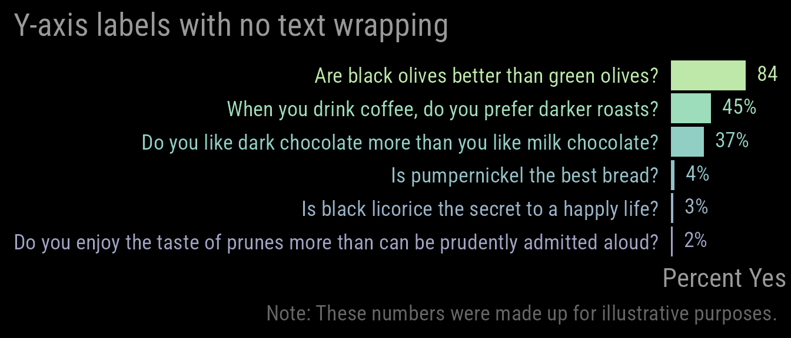
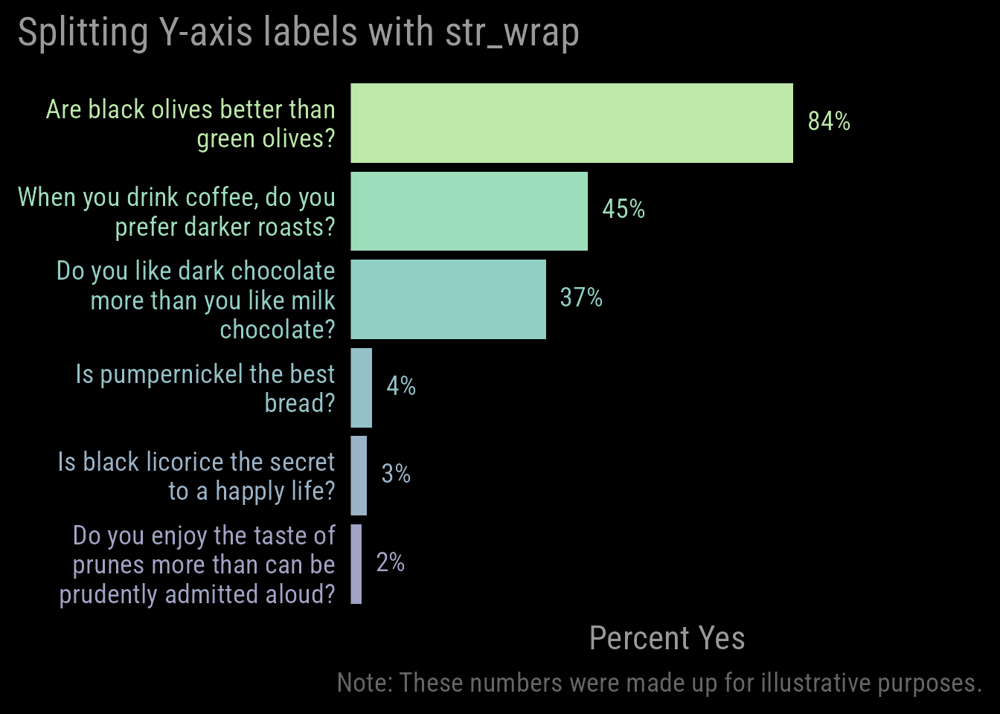
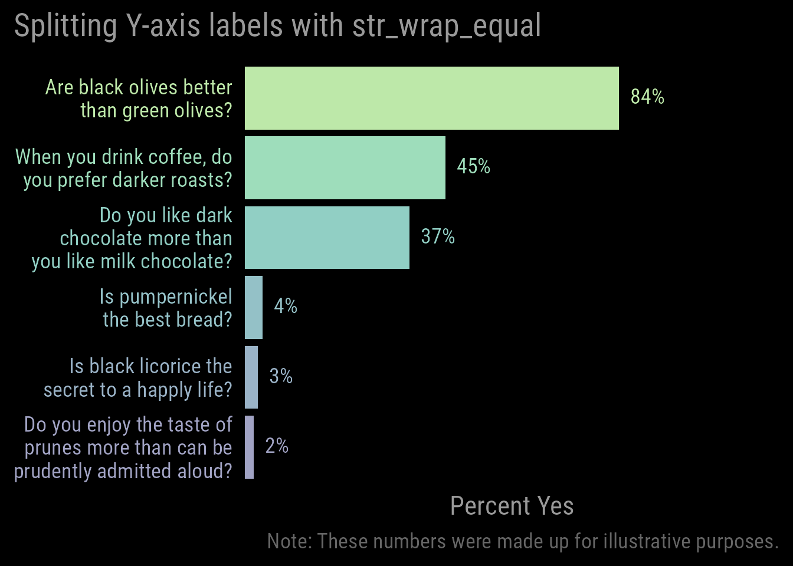

# To install the WJSmisc package:
# remotes::install_github("wjschne/WJSmisc")
library(WJSmisc)
library(tidyverse)
d <- tibble(Item = c("When you drink coffee, do you prefer darker roasts?",
"Is pumpernickel the best bread?",
"Do you like dark chocolate more than you like milk chocolate?",
"Are black olives better than green olives?",
"Do you enjoy the taste of prunes more than can be prudently admitted aloud?",
"Is black licorice the secret to a happly life?"),
Percentage = c(45,4,37, 84,2, 3)) |>
mutate(Item = fct_reorder(Item, Percentage))When analyzing questionnaire data, I sometimes put the text of several questions on the y-axis of a plot. Longer text strings will usually make the plot too narrow.
Suppose we give an admittedly silly questionnaire about preference for darker food. We want to display the percentages of people answering “Yes” to each question.
Here are the questions and the (completely made-up) percentages:
A preliminary plot might look like this:
myfont <- "Roboto Condensed"
mycolors <- viridis::viridis(n = nrow(d), begin = .2, end = .8) |> tinter::lighten(.5)
mytextsize <- 17
mytext <- "gray60"
p <- ggplot(d, aes(Percentage, Item)) +
geom_col(aes(fill = factor(Percentage))) +
geom_richlabel(aes(label = paste0(Percentage, "%"),
color = factor(Percentage)),
hjust = 0, fill = "black",
text_size = mytextsize,
family = myfont) +
labs(y = NULL,
caption = "Note: These numbers were made up for illustrative purposes.") +
theme_minimal(base_size = mytextsize, base_family = myfont) +
scale_x_continuous("Percent Yes",
limits = c(0,100),
breaks = NULL,
expand = expansion(mult = c(0,.2))) +
scale_fill_manual(values = mycolors) +
scale_color_manual(values = mycolors) +
theme(plot.title.position = "plot",
plot.background = element_rect("black"),
plot.title = element_text(colour = mytext),
plot.caption = element_text(color = "gray40"),
legend.position = "none",
axis.title = element_text(color = mytext),
panel.grid.major.y = element_blank(),
axis.text = element_text(color = mycolors))
p + ggtitle("Y-axis labels with no text wrapping")
The questions are taking up a lot of space. We can fix this by using stringr::str_wrap to make the text lines no longer than a specified width:
p +
scale_y_discrete(labels = \(x) str_wrap(x, width = 30)) +
ggtitle("Splitting Y-axis labels with str_wrap")
This is a definite improvement, but I wish the lines of text were wrapped more evenly. For example, I do not like the fact that “chocolate” and “bread” are by themselves on their own lines. I have spent a fair amount of time breaking lines up by hand and hoped to create a function to automate the process. To achieve a more balanced style of text splitting, I made the str_wrap_equal function.
p + scale_y_discrete(labels = \(x) str_wrap_equal(x, max_width = 30)) +
ggtitle("Splitting Y-axis labels with str_wrap_equal")
To each their own, but this style of text wrapping feels better to me here. It is the sort of thing no one but the analyst will notice if it is right but will feel a bit off if not.
For your convenience and mine, I put the str_wrap_equal function in the WJSmisc package.
Technical Details
I hesitate to post a new function because the odds are quite high that someone has already done what I did. However, my initial search did not locate a function that does exactly what I needed. If you know of a function have I duplicated unnecessarily, let me know.
In deciding whether to break the line, the function does the following:
- Calculate the overall length of the text (i.e., number of characters).
- Find k (the number of lines likely needed) by dividing the overall text length by
max_widthand round up to the nearest integers. - Calculate the preferred width of the line by dividing the overall text length by the number of lines likely needed.
- Add to the line one word at a time as long as doing so makes the current line width closer to the preferred width. If not, a new line is started.
- The function will not make a line longer than what is specified by
max_widthunless it has to place a single, lonely word that is longer thanmax_width.
Here is the code for the function. Any suggestions to improve it are welcome.
str_wrap_equal <- function(x, max_width = 30L, sep = "\n") {
purrr::map_chr(x, \(xi) {
# Find overall text length
xlen <- stringr::str_length(xi)
# Remove any line breaks and allow lines to break at forward slashes
xi <- stringr::str_replace(xi, "\n", " ") |>
stringr::str_replace("/", "/ ")
# Number of lines likely needed
k <- ceiling(xlen / max_width)
# Optimal line length
preferred_width <- xlen / k
# Split text into words
words <- stringr::str_split(xi, pattern = " ", simplify = F)[[1]]
# Number of words in text
k_words <- length(words)
# Length of each word in text
word_len <- stringr::str_length(words)
# Create empty text lines with a few extra, if needed
textlines <- rep("", k + 10)
# Current text line
i <- 1
# Decide whether to add a word to the current line or to start a new line
for (w in seq(k_words)) {
# Width of current line before adding a new word
current_width <- stringr::str_length(textlines[i])
# Width of current line if a new word is added
proposed_width <- current_width + word_len[w] + 1
# Difference between current width and preferred width
current_difference <- abs(current_width - preferred_width)
# Difference between proposed width and preferred width
proposed_difference <- abs(proposed_width - preferred_width)
# Should we start a new line?
if (current_difference < proposed_difference | proposed_width > max_width) {
i <- i + 1
}
# Add word to current line, remove spaces, and rejoin words divided by forward slashes
textlines[i] <- stringr::str_trim(paste(textlines[i], words[w])) |>
stringr::str_replace("/ ", "/")
}
# Collapse non-empty lines by separation character
paste0(textlines[stringr::str_length(textlines) > 0], collapse = sep)
})
}